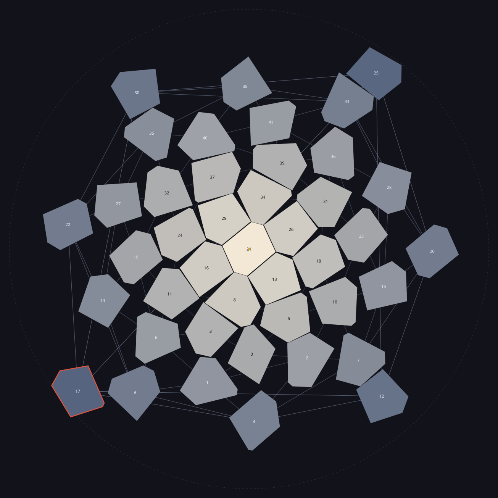
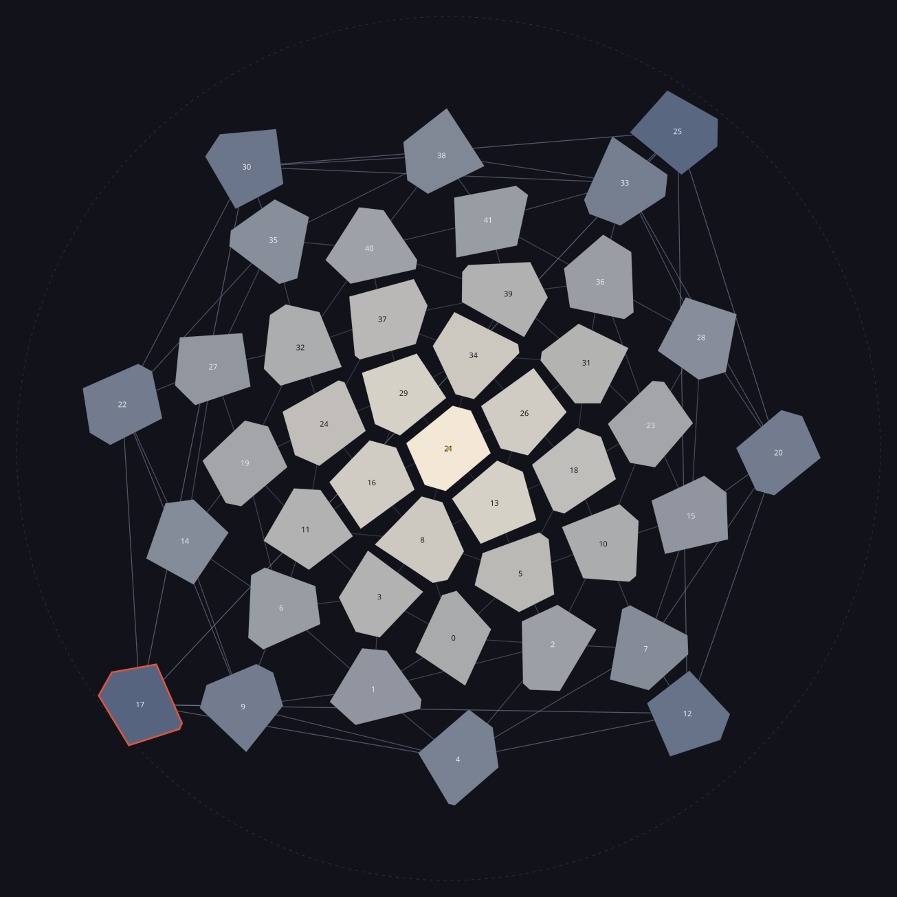
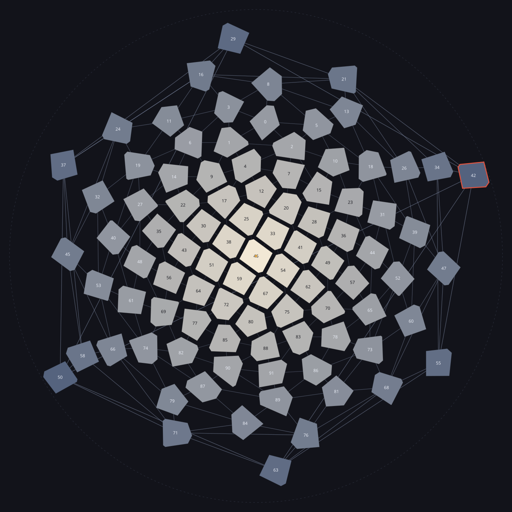
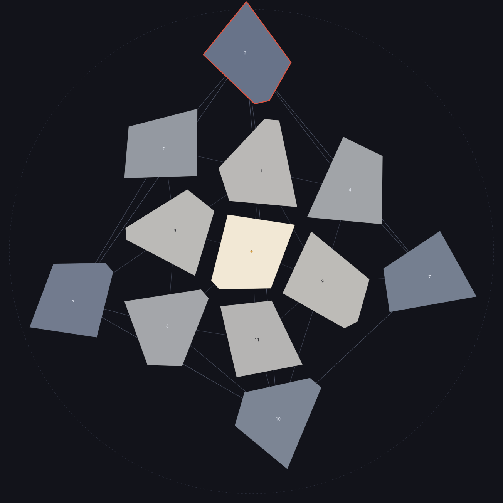

Every territory is drawn at its own shape, wherever it lands. What stretches is the space between territories. The whole world is on one page, so no destination needs the globe turned to reach it - which is the thing this is for. The dot is the focus; the dashed circle is where the focus's antipode lands; the territory outlined in red is the one the projection cannot draw honestly.
from the focus
gap between territories
share of the world within
15 degrees
1%
2%
30 degrees
5%
7%
60 degrees
21%
25%
90 degrees
57%
50%
120 degrees
142%
75%
150 degrees
424%
93%

42 territories, 0 per cent gap. True size, no gap chosen. Only the space the projection itself opens, which is nothing at the focus and everything at the rim. Flattening on its own forces a gap of 0.1 per cent here; everything beyond that is chosen. The territory that pays the seam is 17.

42 territories, 12 per cent gap. The same world with a twelve per cent gap chosen for looks. This is the one to judge: it is what a player would see. Flattening on its own forces a gap of 0.1 per cent here; everything beyond that is chosen. The territory that pays the seam is 17.

92 territories, 12 per cent gap. The largest planet the game has, same gap. More territories means each is smaller, so the rim carries more of them. Flattening on its own forces a gap of 0.5 per cent here; everything beyond that is chosen. The territory that pays the seam is 42.

12 territories, 12 per cent gap. The smallest planet. Twelve territories and 720 degrees of tax means 60 degrees each, which is why so little of it looks flat. Flattening on its own forces a gap of 0.0 per cent here; everything beyond that is chosen. The territory that pays the seam is 2.